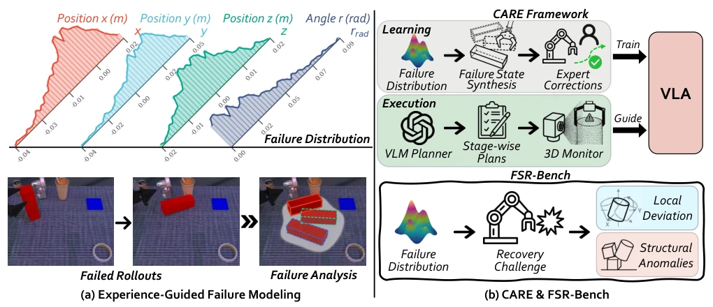
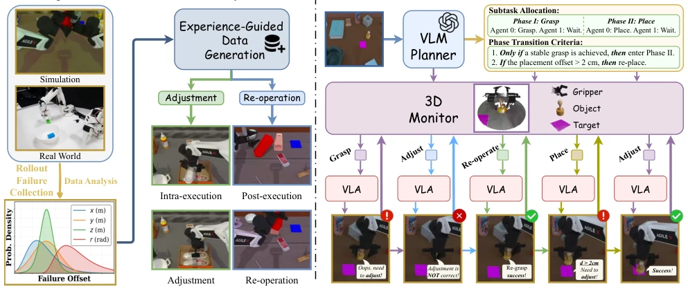
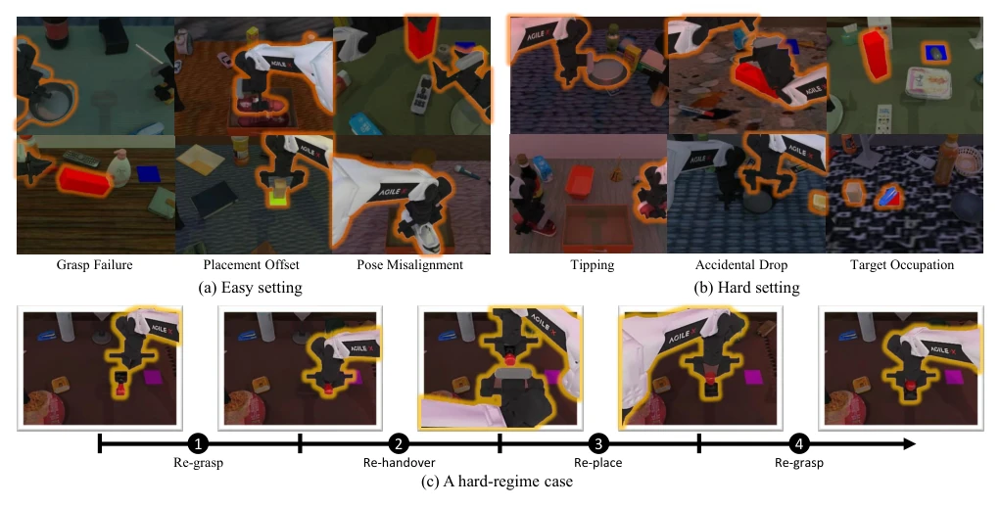
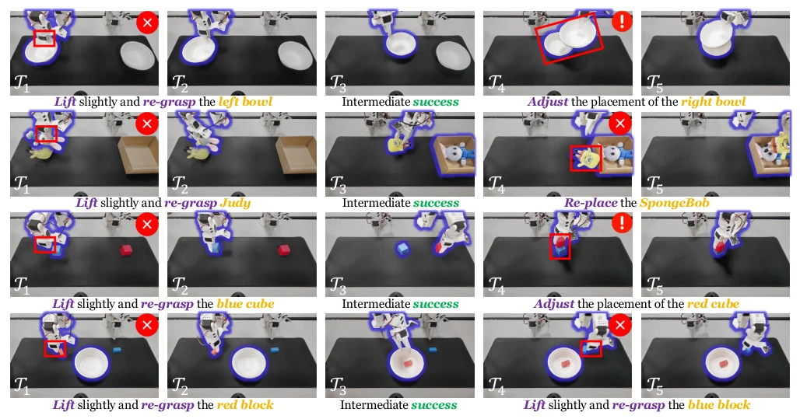
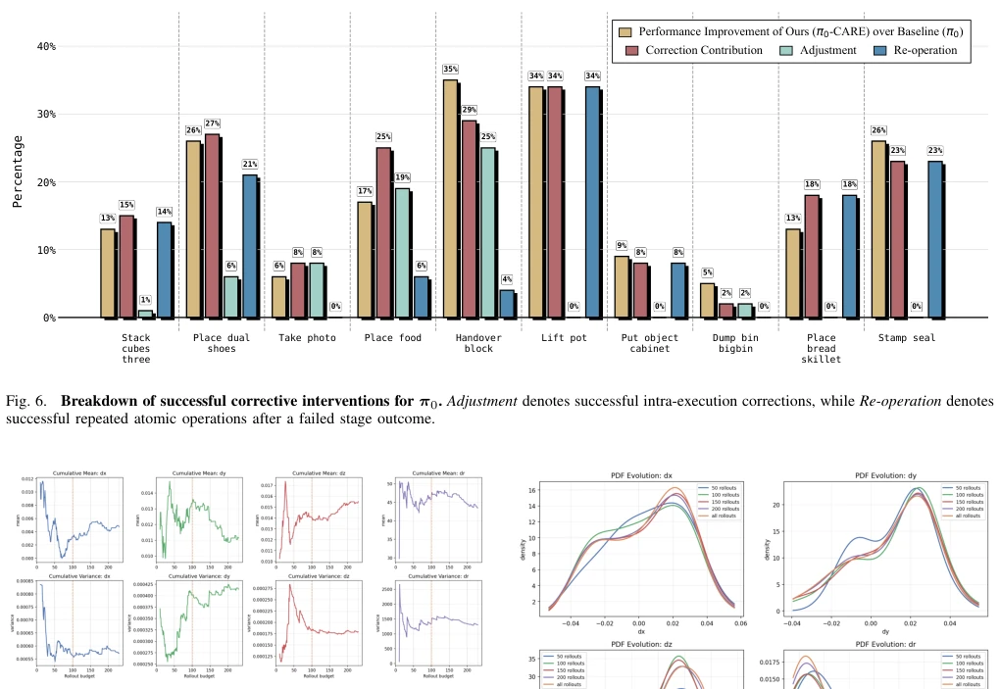
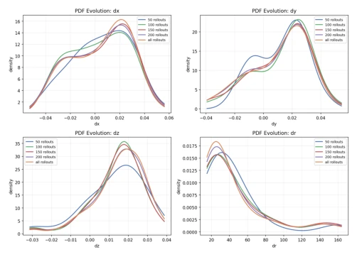
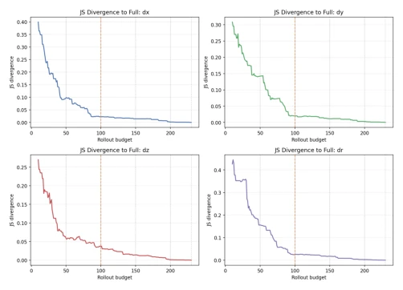
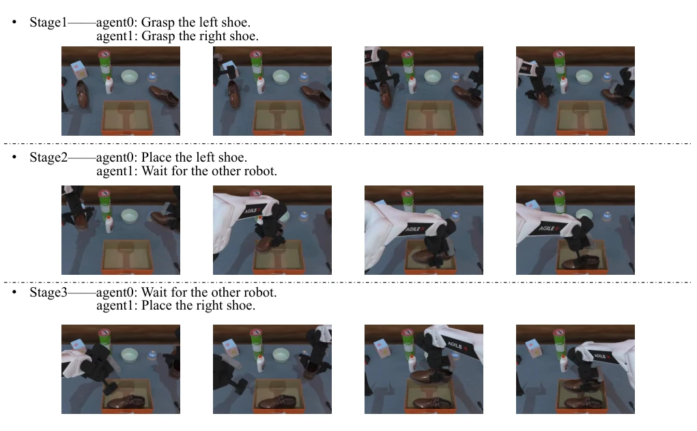
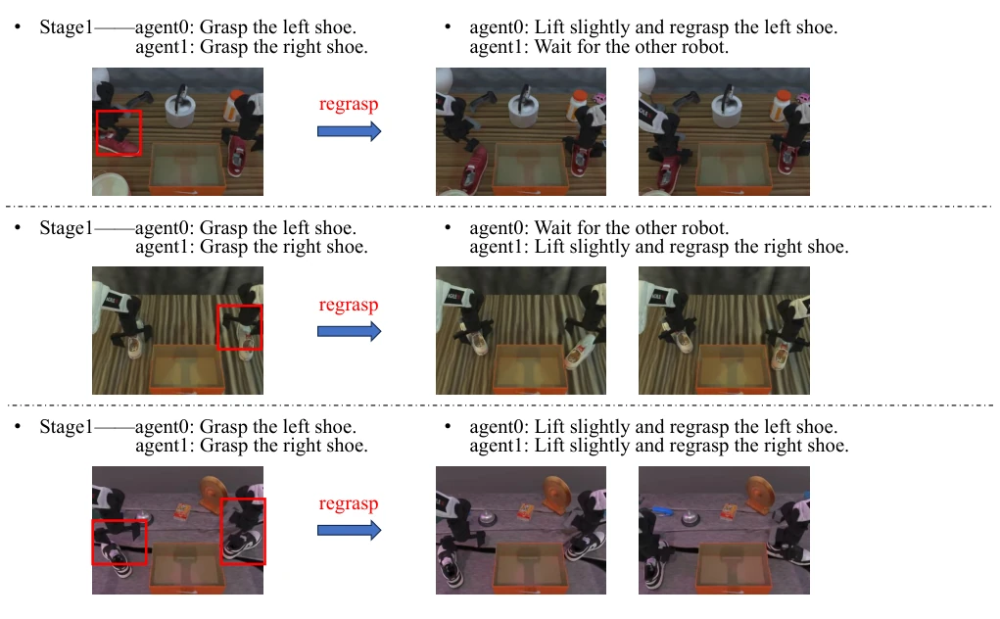

VLA 策略在操作任务中表现强劲，但一旦偏离名义轨迹即脆弱，这毛病大家都有。CARE 这活儿干得挺实在，不整虚的，直接拿执行失败的数据建模，把“翻车现场”变成训练素材。它把任务拆成原子阶段，用 3D 监控盯着，发现不对就微调或重来，不用换策略。不过，依赖 3D 点云监控在复杂光照下可能翻车，而且 FSR-Bench 虽然填补了空白，但评估标准是否够通用还得看后续。总的来说，这是给 VLA 加了个“后悔药”机制，比单纯随机扰动靠谱，但离真正的鲁棒性还有距离，毕竟物理世界的坑比模型想象的深。此外，其经验引导的数据合成策略避免了人工设计扰动的主观性，但计算开销和实时性仍是工程落地的潜在瓶颈。
VLA strategies exhibit strong performance in manipulation tasks but become fragile once deviating from nominal trajectories, a flaw shared by all. CARE approaches this matter pragmatically, avoiding superficiality by directly modeling execution failure data, transforming 'failure scenarios' into training material. It decomposes tasks into atomic stages, employs 3D monitoring to track progress, and triggers fine-tuning or restart upon anomaly detection without switching strategies. However, reliance on 3D point cloud monitoring may fail under complex lighting conditions, and although FSR-Bench fills a gap, whether the evaluation standards are sufficiently general remains to be seen. Overall, this introduces a 'regret pill' mechanism for VLA, which is more reliable than simple random perturbation, yet still distant from true robustness, as the pitfalls of the physical world are deeper than models imagine. Furthermore, while its experience-guided data synthesis strategy avoids the subjectivity of manually designed perturbations, computational overhead and real-time performance remain potential bottlenecks for engineering deployment.
Existing VLA strategies primarily rely on training with successful demonstrations; once execution deviates from the nominal trajectory (e.g., object slipping or misalignment), the strategy fails [1]–[6]. Existing recovery methods either simply rollback [7,8] or generate correction data using random perturbations [9,10]; the latter fails to explicitly model execution-induced biases, resulting in a mismatch between training data and the true failure distribution. This creates a gap between training and deployment, lacking supervision for real failure patterns. CARE aims to leverage the failure distribution within execution experience to provide structured supervision, addressing VLA recovery in intermediate failure states. It fills the gap from nominal execution to anomaly recovery, enabling strategies to learn from their own errors.

Fig. 1. Overview of CARE and FSR-Bench. (a) CARE models stage-specific failure distributions from execution experience to generate failure states and collect corrective demonstrations. (b) CARE uses these distributions for recovery learning, whereas FSR-Bench independently estimates its evaluation distribution from a mixture of nominal policies to generate shared recovery initializations.
The CARE framework consists of two steps. First, experience-guided data synthesis: collect failure rollouts, fit the stage-wise conditional bias distribution $p(d|k)$ using distributions such as Gaussian and Beta, and synthesize representative failure states and correction demonstrations based on this, rather than random perturbations. Second, atomic correction execution: the VLM Planner decomposes tasks into atomic stages with predefined geometric cues and termination conditions; the 3D Geometry Monitor tracks gripper/object/target point clouds in real-time, calculates the geometric state, and triggers adjustments (intra-execution) or re-operations. The VLA Executor uniformly executes both nominal and correction instructions without switching strategies. The entire process achieves multi-step recovery through a Monitor-Execute-Verify loop, ensuring physical consistency, and since the Monitor is based on geometric predicates rather than VLM, latency is reduced.

Fig. 2. Overview of CARE. CARE first models stage-conditioned deviations from failed executions and uses them to generate corrective demonstrations. At inference time, stage-wise planning and 3D monitoring select nominal or corrective atomic instructions for a unified VLA executor.
Evaluated on RoboTwin 2.0, RoboFactory, and real dual-arm tasks, comparing against baselines such as pi_0 and ACT. FSR-Bench was introduced to evaluate intermediate state recovery. Metrics include task success rate and recovery success rate (RSR). Results indicate CARE improved performance by an average of 14.5 points in simulation, 15.9 points in the real world, and 7.5 points on FSR-Bench. Ablation studies demonstrate that experience-guided data is more effective than uniform random sampling (+12.2 points), and 3D monitoring is more accurate and faster than VLM monitoring (+22.4 points accuracy). This proves that failure experience serves as effective corrective supervision and the atomic execution mechanism is indispensable. In dual-arm collaboration tasks, CARE significantly enhanced recovery capabilities for multi-arm coordination.

Fig. 3. FSR-Bench. Recovery scenarios are grouped into two regimes by corrective complexity: (a) Easy, including local deviations that typically admit single-step correction, such as Grasp Failure, Placement Offset, and Pose Misalignment; and (b) Hard, including structural anomalies that require multi-step recovery or multi-arm coordination, such as Tipping, Accidental Drop, and Target Occupation. Each column shows two representative initializations. (c) A hard-regime case, where repeated monitor–execute–verify transitions select a coordinated sequence of bimanual corrective skills online.

Fig. 4. Qualitative results on four real-world dual-arm SO-101 tasks. From top to bottom: Stack Two Bowls, Pass Two Toys, Stack Two Cubes, and Place Two Cubes. : Requiring post-execution re-operation; : Requiring intra-execution adjustment.
其他图片Other Figures

Fig. 7. Cumulative mean and variance of the four modeled variables, dx, dy, dz, and dr, under different rollout budgets on Put Object Cabinet. The statistics become much more stable around 100 rollouts, while further increasing the rollout budget yields only limited changes.

Fig. 8. Evolution of the empirical PDFs of dx, dy, dz, and dr under different rollout budgets on Put Object Cabinet. The distributions estimated from 100 rollouts already closely match those obtained with larger rollout budgets.

Fig. 9. Jensen-Shannon divergence between the prefix distribution and the full-data distribution for dx, dy, dz, and dr under different rollout budgets on Put Object Cabinet. The divergence drops substantially by 100 rollouts and decreases only marginally afterward, indicating that the deviation prior has largely saturated.

Fig. 11. Visualization of the nominal execution for Place Dual Shoes (Part 1/4). We show the full process of the three nominal atomic actions in the task.

Fig. 12. Visualization of the corrective execution for Place Dual Shoes at Stage 1 (Part 2/4). The figure shows the correction process for the first stage of the task.